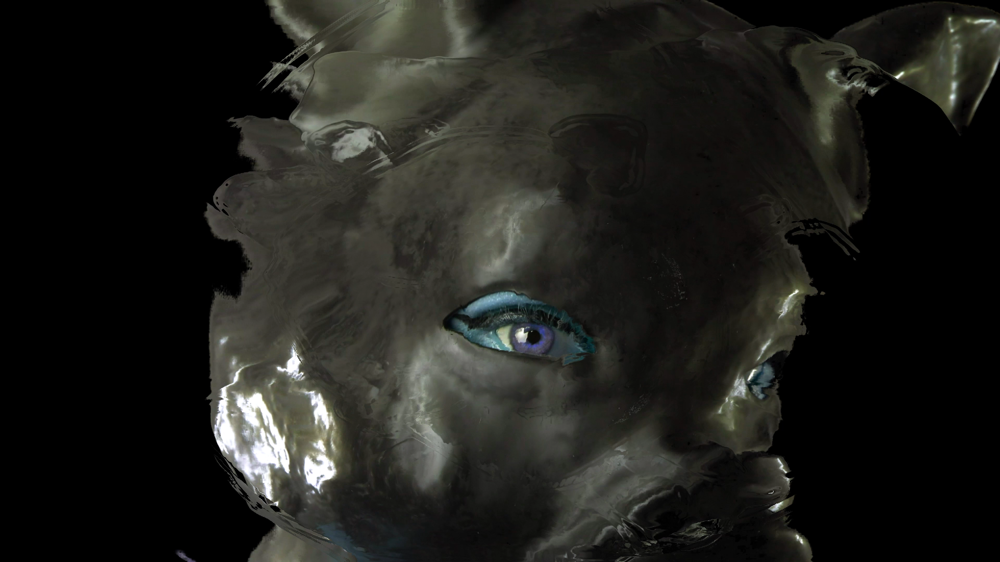
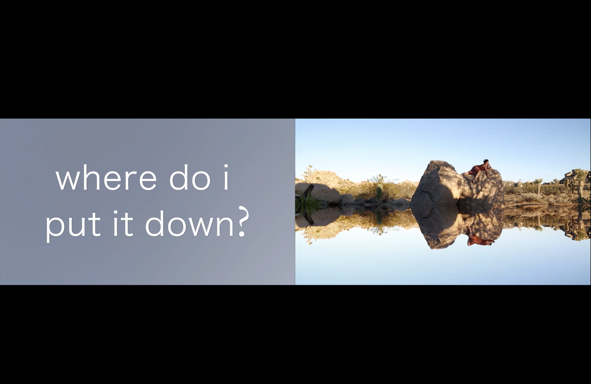

For Anna Magnani; Nightmares and Visions
For Anna Magnani; Nightmares and Visions
Nanda D'Agostino
2022
Digital video
At the beginning of 2022 I was struggling to find ways to be an artist in the face of the rise of authoritarianism , white supremacy and gun violence in the United States. Making personal work felt impossible and irrelevant. Searching for historical models of art making in the face of impossible times I remembered Roberto Rossellini’s World War 2 Trilogy and particularly his anti-fascist masterpiece Rome Open City. In it Anna Magnani gives a ground breaking performance as Pina the partner of a partisan fighter risking everything to liberate the city. There is a minute long scene where Francisco is being hauled away by the Nazis where Magnani embodies every emotion I had been feeling. I became obsessed with that scene and must have watched it 50 times. At the same time I was thinking about embodied and generational trauma and how it lives in our bodies, and ways that we as women can heal ourselves and each other. For Anna Magnani; Nightmares and Visions is my distillation of those throwntogether struggles to come to terms with our present moment.

Grief Kink
Sarah Turner
2022
10:00
Digital video
Know Yourself. Part guided meditation, part psycho-spiritual ritual, the Oracle of Alfred, NY seduces you into sitting with your grief.

when the caustic cools
Mel Carter
2016
03:56
Digital video
 Bodyland
Bodyland
Sarah Brahim
2021
03:08
Digital video
 safehouse ii
safehouse ii
ariella tai
2020
12:00
Digital video
 Make a thing. Break it
Make a thing. Break it
Satpreet Kahlon
2020
1:53
Digital video
 Queer/Cuir
Queer/Cuir
Daniel Coka
2014
3:38
Digital video
 Fundamental Indeterminacy
Fundamental Indeterminacy
Sim Hahahah
2022
08:38
Digital video
A short tour through time and space in the city of brotherly love.
 Pylon Genesis
Pylon Genesis
Sam Dellert (with Shae Belenski & Brooke Shilling)
2021
05:25
8mm transferred to digital video
A creation myth told via traffic cone aesthetics.
 Good English Bad (American)
Good English Bad (American)
Guava Rhee
2022
5:00
Digital video
Through reconstructing the childhood experiences of exclusion, translation, and mis-translation, the artist explores queer desire and Korean diaspora.
 “Oh—D~~~!!” Title Card (Reel 2)
“Oh—D~~~!!” Title Card (Reel 2)
Zoe Chronis
2014
06:24
16mm transferred to digital video
This 16mm film reel depicts a hand-lettered card copied from the 1919 film Daddy Long Legs. A twist ending reveals the word's place in the world.
 Getting Birth
Getting Birth
Pam Price and George Shands
2022
6:44
Digital video
Pam Price and George Shands dub over a cesarean scene from General Hospital circa 1980s. Pam and George use surreal dialogue to interrogate the intersections of disability, birth, and daytime television.
 giroscopio
giroscopio
John Muse & Brendamaris Rodriguez
2021
08:38
Digital video
giroscopio is a short experimental film by two artists, one in Pennsylvania and one in Puerto Rico, each in pandemic lockdown, each disoriented. Objects seem to control them; their bodies are unbalanced, unwieldy, comical. The horizon spins; the ground falls away; and yet a strange wonder reigns. / giroscopio es un cortometraje experimental de dos artistas, uno en Pensilvania y otro en Puerto Rico, cada uno en confinamiento por la pandemia, cada uno desorientado. Los objetos parecen controlarlos; sus cuerpos son desequilibrados, difíciles de manejar, cómicos. El horizonte gira; el suelo se cae; y, sin embargo, reina una extraña maravilla.
 Liquid Life
Liquid Life
Bambi Angel
2020
5:57 minutes
Music: Teva Suite by Holly Waxwing & Sunlight On Your Skin by Lil Peep
Includes interview excerpt of Genesis Breyer P-Orridge
Liquid Life is a meditation on the pain and joy of metamorphosis; hitting the glass ceiling within oneself and breaking through. Ice cracking, melting permafrost. The jubilant unfolding and unfurling that comes from choosing love and mutability.